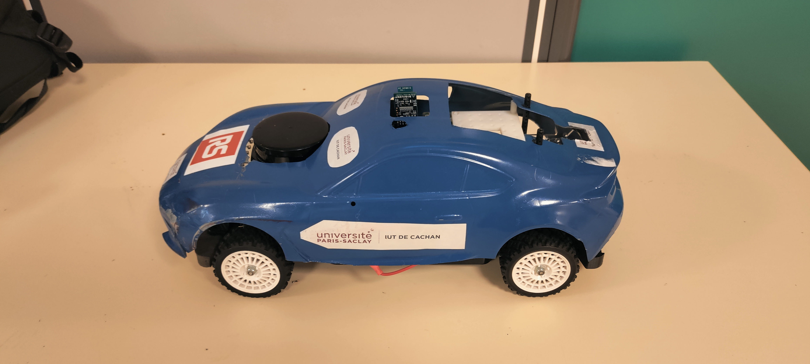
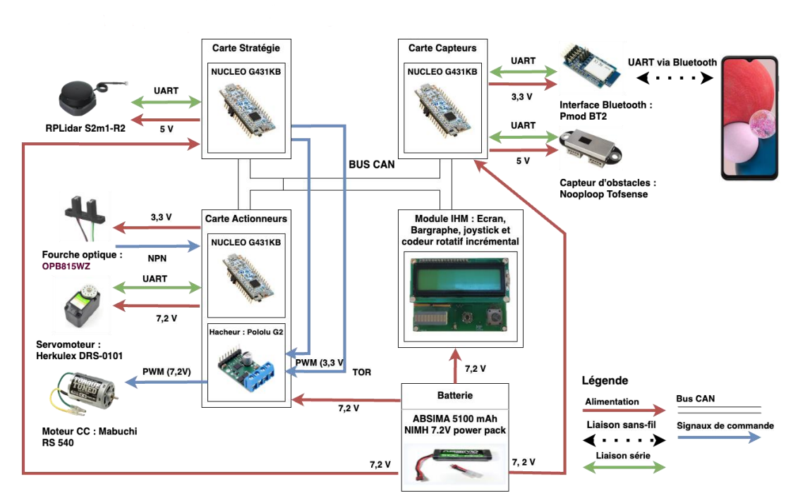

Le projet COVAPSY consiste à concevoir un véhicule autonome à l'échelle 1/10e, capable de naviguer sur un circuit sans intervention humaine. Ce projet a été réalisé pour une compétition de l'Université Paris-Saclay.

Vue d'ensemble de la voiture.
1. Architecture Système et Réseau CAN
L'intelligence du véhicule est répartie sur trois microcontrôleurs STM32 Nucleo G431KB communiquant via un Bus CAN pour assurer une réactivité en temps réel :
📡 Carte Comm. & Capteurs
Elle gère le module Bluetoothpour le contrôle du démarrage/arrêt via smartphone et traite les données des capteurs de distance arrière pour la sécurité.
🧠 Carte Stratégie & LiDAR
Cette Carte analyse les distances mesurées par le LiDAR S2 pour définir la trajectoire. Elle génère ensuite les commandes envoyées au hacheur pour contrôler la vitesse et le sens de rotation du moteur.
⚙️ Carte Actionneurs
Dédiée à la direction et l'odométrie. Elle pilote le servomoteur Herkulex pour l'angle de braquage et traite le signal de la fourche optique pour assurer le retour de vitesse.

Synoptique de l'architecture électronique de la voiture.
2. Perception en Temps Réel (LiDAR)
La localisation de la voiture repose sur un LiDAR à balayage laser. Les données sont extraites via UART utilisé en DMA, permettant un traitement fluide des obstacles sans interrompre les calculs de trajectoire.
Visualisation du flux de données LiDAR utilisé pour la détection des bordures.
3. Validation en Simulation (Webots)
Avant l'implémentation physique, nous avons validé l'intégralité de la stratégie de conduite sous Webots.
Démonstration de l'algorithme de conduite autonome en environnement virtuel.
4. Performance en Compétition
La robustesse de notre solution a été prouvée lors des phases de qualification où nous avons terminé à la 1ère place de notre groupe.
Vidéo de la course : navigation fluide de la voiture autonome sur le circuit de l'ENS Paris-Saclay.
Conclusion
Le projet s'est terminé par une 6ème place sur 15 équipes. Cette expérience a été fondamentale pour ma maîtrise des systèmes embarqués temps réel et du multiplexage de données via Bus CAN. Elle a renforcé ma capacité à optimiser des logiciels bas-niveau (Langage C) pour des applications de robotique mobile.